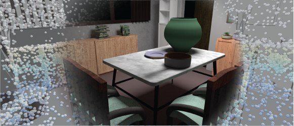
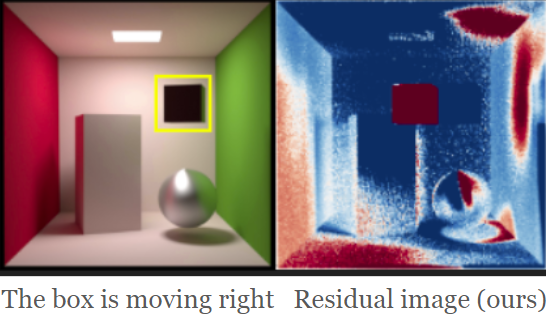
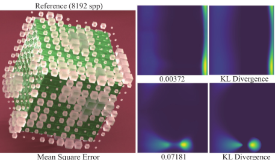
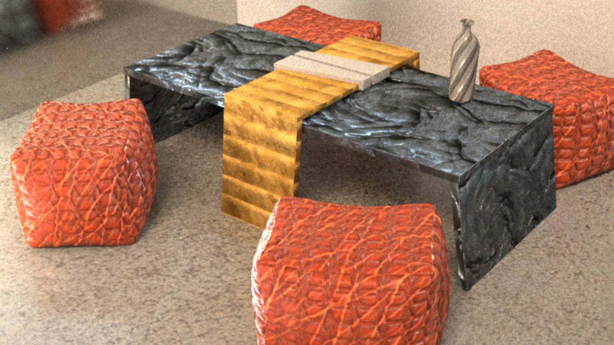
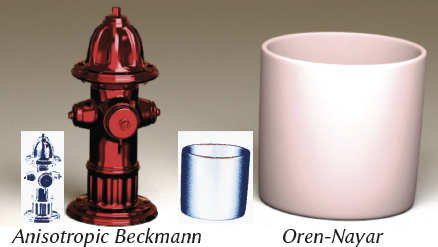
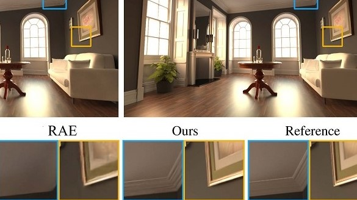
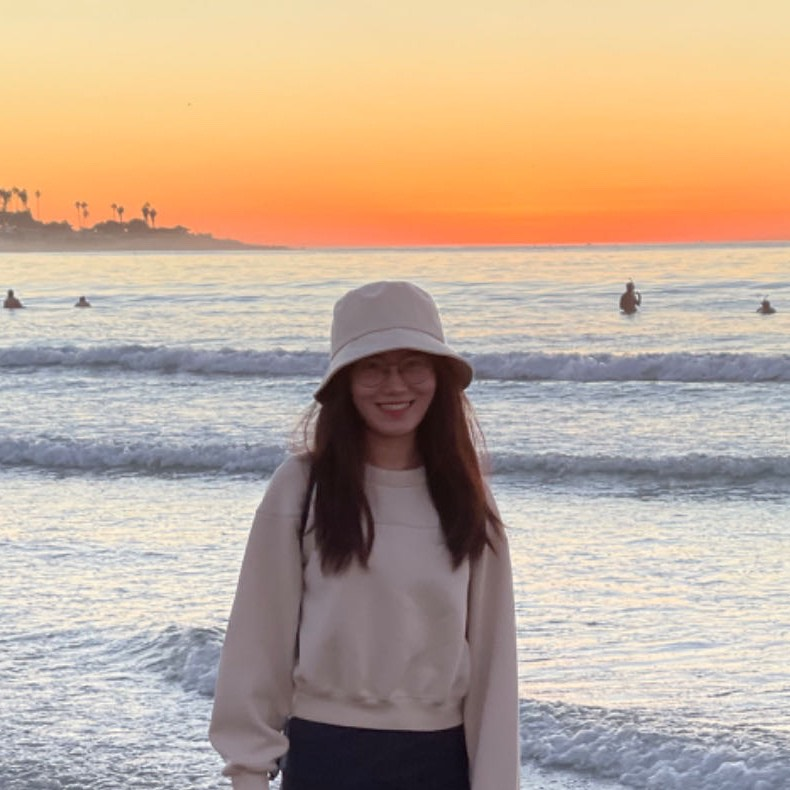

Bing Xu — Computer Graphics Research
徐 冰
Github / Scholar / LinkedIn / Blog / Twitter
Bio
-
I am a Research Scientist at NVIDIA Real-Time Graphics Research
group, primarily working on physically-based rendering and neural rendering.
I earned my PhD from UC San Diego, where I was advised by Professor Ravi Ramamoorthi and worked closely with Professor Tzu-Mao Li. Previously, I obtained my bachelor's degree in CS from the University of Hong Kong and worked on knowledge-based question answering systems with Professor Benjamin Kao.
During my PhD, I had the fortune to intern at several top research teams, working with amazing mentors and colleagues: Adobe Graphics Research (2022, with Fujun Luan, Miloš Hašan and Iliyan Georgiev), Meta Reality Labs (2023, with Carl Marshall) and Nvidia Real Time Rendering team (2024-2025, with Marco Salvi), Meta Reality Labs again (2025, with Brian Budge). Prior to that, I gained three years of industry experience in photo-realistic rendering (developing our in-house offline renderer) and 3D designer tools, where my manager Dr. Rui Tang first guided me into graphics research.
Research
I am mainly interested in physically-based rendering, neural rendering and real-time graphics, especially forward&inverse light transport simulation, stochastic sampling, learning approaches for appearance modelling and data-prior boosted light transport in general. Recently I'm very interested in optimization problems and 3D geometric learning. Besides, I am motivated to create artistic tools to serve the future workflows of artists.
Bing Xu, Mukund Varma T, Cheng Wang, Tzu-Mao Li, Lifan Wu, Bart Wronski, Ravi Ramamoorthi, Marco Salvi
project page / paper / 3D scenes & code (coming)
We introduce a transformer-based framework for learning a generalizable 3D light transport embedding that directly approximates global illumination from 3D scene geometry, material properties and lighting, without rasterized or path-traced illumination cues. By capturing long-range spatial interactions through attention, our method produces view-independent results across a wide variety of indoor scenes without requiring per-scene training.

Bing Xu, Tzu-Mao Li, Iliyan Georgiev, Trevor Hedstrom, Ravi Ramamoorthi
Computer Graphics Forum (Proceedings of Eurographics Symposium on Rendering), 2024
Best Paper Award
project page / paper / slides / code (coming)
Incremental re-rendering of scenes in a common scenario where only a small portion is moving
or edited (e.g. the main character hanging around in an open world).
Formulating the difference between two frames as a (correlated) light-transport integral.
Devising sampling strategies to focus on paths with non-zero residual-radiance contribution
and tailoring appropriate path mappings.
We welcome increased attention to the exploration and potential optimization of the
residual path integral and, overall, the re-rendering problem. It is by essence a finite
difference renderer and I'm also interested in exploring its applications in inverse
rendering.

Ziyang Fu, Yash Belhe, Haolin Lu, Liwen Wu, Bing Xu, Tzu-Mao Li
ACM SIGGRAPH Asia, 2024
project page / paper / code
BSDF importance sampling, using compact diffusion models to represent spherical domain probability density distributions.

Bing Xu, Liwen Wu, Miloš Hašan, Fujun Luan, Iliyan Georgiev, Zexiang Xu, Ravi Ramamoorthi
ACM SIGGRAPH, 2023
project page / paper / code
A simple toolbox composed of three approaches to efficiently importance sample neural SVBRDFs, potentially facilitating the broader adoption of neural material models in production.

Yash Belhe, Bing Xu, Sai Praveen Bangaru, Ravi Ramamoorthi, Tzu-Mao Li
ACM Transactions on Graphics (TOG), 2024
project page / paper
Importance sampling real-valued derivatives, enabling better recovery of spatially varying textures through GD-based inverse rendering.

Bing Xu, Junfei Zhang, Rui Wang, Kun Xu, Yong-liang Yang, Chuan Li, Rui Tang
ACM Transactions on Graphics (TOG), ACM SIGGRAPH Asia, 2019
project page / paper / code
Denoising Monte Carlo renderings by better utilizing the first bounce auxiliary features and adversarial loss.
Art
→ View GalleryI am an associate member of the Puget Sound Group Northwest Artists. I mostly paint landscapes in the PNW and California, but also sketch random thoughts and emotions. Oil paint is my favorite medium, and I use acrylics or soft pastels for quick sketches. Some of my work can be found in the gallery above. These photos were taken casually, so the resolution may not be good. Perhaps I will get more serious about it once my paintings start making money. You know, the best-case scenario I can think of: after the painter's death.
I have always been a visual person and am born sensitive to colors. Expressing and communicating via pixels are my choice of words. Painting is one form, ray tracing is another.Miscellany
-
I used to play some soccer with our community amateur team when the sun was not too bright (what does this mean in
San Diego?). Now, sadly, I am slightly too old for that level of intensity.

Yes. The La Jolla beach you can't escape from in SD.
Interested keywords: Light transport simulation; Importance sampling; Rendering; Numerical optimization.
Welcome discussions and collaborations related to those problems.
NO NEWS IS GOOD NEWS
- 11/2025 - Did blender ever help you? Time to help back. Blender needs some funding. I've started monthly donation. Let's do our part for 3D artistic tools if you hope to keep a creative world.
- 04/04/2025 - Farewell, KDB, 17.
- 09/30/2024 - Sadly. Antoine Griezmann retired from the national team.
- 06/02/2024 - Updated the website with a new bg color..
- 06/01/2024 - Real Madrid won their 15th UCL trophy.. Modric will stay for another season
- 04/05/2024 - 30 years since Kurt Cobain died..
- I don't need a news column if I don't have much news right.. PEACE!
- [Archive…]